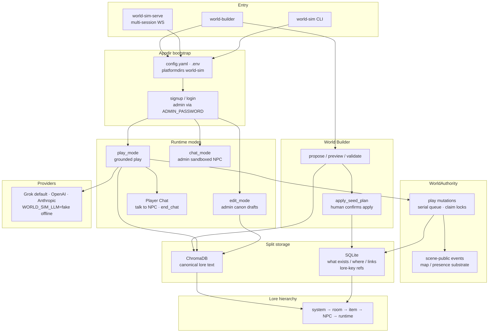

World-Sim
A local narrative simulation with split storage, grounded play modes, and a companion World Builder.
The problem
Most LLM “worlds” keep structure and prose in one blurry store, so a chat turn can invent a room that never existed, or a builder can write layout without anyone approving the plan.
I needed a local simulation where structured state answers what exists and where it is, canonical lore answers what it means, and play, admin edit, and sandboxed chat stay in separate modes. What was missing was an MVP platform with appdir bootstrap, auth, a Quiet Manor seed, and a Builder that proposes structure without unsupervised apply.
Why I built it
Day to day, I wanted to walk a seeded manor, talk to an NPC when present, edit canon as admin through drafts, and grow the world from approved lore with an explicit apply step.
Packaged commands were enough for that: world-sim for the session shell, world-builder for structure from lore, and later world-sim-serve for thin multi-session web. Providers default to Grok, with OpenAI and Anthropic available, and WORLD_SIM_LLM=fake for offline play.
What I built
World-Sim is a Python narrative simulation. Phase 1 MVP (slices 1 through 5) is complete: appdir bootstrap, .env / config.yaml, auth, SQLite structured state plus ChromaDB canonical lore, Quiet Manor with Mrs. Hale, grounded play_mode, admin edit_mode, admin sandboxed chat_mode, and the World Builder companion (propose / preview / validate / apply, including propose_from_brief).
Later phases in the same repo add WorldAuthority over play mutations, multi-session WebSockets with presence, public say, and a schematic map, contested co-op via a serial mutation queue and exclusive Player Chat leases, plus optional memory, retrieval, and lore_guard (all default off). Dynamic frontier expansion also defaults off. Deferred work still includes nicer web polish, scale-out beyond small co-op, broad CRUD, inventory handoff in Player Chat, and unsupervised Builder apply (Exp-007).
You install with pip install -e . (Python 3.11+), run world-sim once to bootstrap, set keys in .env, then play or serve.
Three decisions
These are the craft bets I would defend in a design review, each one about storage honesty, mode boundaries, or who is allowed to write structure.
1. SQLite for what exists; Chroma for what it means.
SQLite holds users, characters, rooms, items, NPCs, sessions, relationships, runtime state, and lore-key references. ChromaDB holds canonical lore text (system, room, item, NPC). Play-tool mutations and authoritative structured reads go through WorldAuthority (SQLite-backed via WorldStore today). I was counting on that split so a narration pass cannot quietly invent durable layout, and so lore can be revised without rewriting every row that points at a key. The grounding hierarchy stays system to room to item to NPC to mutable runtime on purpose.
2. Play, edit, and chat stay separate modes.
play_mode is normal grounded gameplay. edit_mode is admin-only constrained canon management (including draft create/revise paths that wait on approve_draft). chat_mode is admin-only sandboxed NPC conversation and is intended to stay non-canonical: it should not mutate world state or persistent NPC memory. In-play Player Chat (talk to / end_chat) is conversation-only for a present NPC, with exclusive leases under contested co-op. I was counting on mode boundaries to keep rehearsal and canon edits from leaking into play state. Mixing those surfaces is how worlds lose integrity.
3. Builder proposes; humans apply.
world-builder shares the same appdir, config, SQLite, and Chroma store. It seeds and validates structure from approved lore. Proposals stay drafts until you explicitly apply_seed_plan (preview and validate first; apply asks you to type apply or pass --yes). Briefs supply intent, not silent canon. If named lore keys are missing, Builder fails closed. The bet was that unsupervised structure writes are an experiment (Exp-007), not MVP. Play narration never creates rooms; only stub realize (when dynamic expansion is on) or Builder apply writes structure.
Proof
You can follow the same paths from the public README, docs/OPERATOR.md, and docs/WORLD-AUTHORING.md.
pip install -e . WORLD_SIM_LLM=fake world-sim WORLD_SIM_LLM=fake world-sim-serve --host 127.0.0.1 --port 8765 world-builder
In play after login (Quiet Manor foyer): look, go north, take brass key, talk to Mrs. Hale, end_chat. Admin: mode edit then draft lore commands and approve_draft. Builder: propose_from_brief examples/seed-brief-cellar.yaml, preview_seed_plan, validate_world, apply_seed_plan.
From the public repo you can also confirm: providers Grok / OpenAI / Anthropic, optional flags default off (world.dynamic_expansion, memory.enabled, retrieval.enabled, player_chat.lore_guard), and the deferred list for unsupervised apply and scale-out.

WorldAuthority over
mutations, SQLite versus Chroma split storage, and World Builder
propose, preview, validate, then human apply.
Why I built it this way
These boundaries are the same ones I hold when a simulation has to survive more than one session: durable structure, durable meaning, and an apply step a human can refuse.
I keep SQLite and Chroma apart so existence and meaning do not collapse into one blob. I keep play, edit, and chat in separate modes so rehearsal cannot rewrite the manor by accident. I keep Builder on propose and apply so layout stays a decision. If you are going to simulate a world with an LLM in the loop, the storage split and the apply gate should still be something you can explain to a peer in under two minutes.